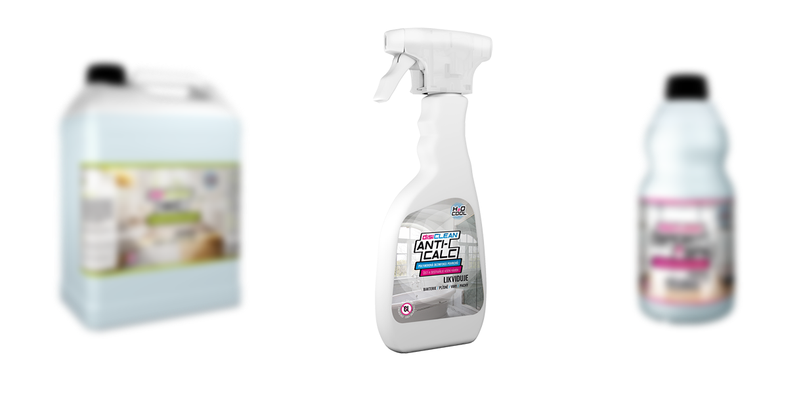

--- 

layout: default 
title: Dezinfekčné čistiace prostriedky H2O-COOL - WATER TECHNOLOGY

---
<div id="dezinfekcne-cistiace-prostriedky-h2ocool">

        <section class="product-header">
                <div class="product-header-cover clearfix">
                    
                </div>
                <div class="container product-heading">
                    <div class="row">
                        <div class="col-12 text-center">
                            <h1> 
                                Dezinfekčné čistiace prostriedky <br>
                                H2O-COOL
                            </h1>
                        </div>
                    </div>
                </div>
    
            <div class="clearfix text-center">
                <a href="/produkty.html"> 
                    &lt;-  Späť na zoznam produktov
                </a>
            </div> 
        </section>

    <section class="text">
        <div class="container">
            <div class="row align-items-center text-block">
                <div class="col-12 text-center text-uppercase">
                    <h4>Pantentovaná kvalita z talianska</h4>
                    <h1>
                        Dezinfekčné čistiace prostriedky <br>
                        H2O-COOL
                    </h1>
                </div>
                <div class="col-12 text-block">
                    
                    <p class="text-center full-width mt-4">
                            Polymérové dezinfekčné prostriedky sa líšia od bežne používaných dezinfekčných
                            prostriedkov týmito faktormi: sú zdravotne nezávadné pre ľudí a zvieratá, nespôsobujú
                            koróziu, sú nehorľavé, nie sú toxické, nefarbia a nemajú zápach, neobsahujú karcinogénne
                            látky, sú pH neutrálne, sú biologicky odbúrateľné, likvidujú víry, baktérie a plesne.
                            <br><br>
                            Neobsahujú chlór, alkohol, aldehyd, fenol, lúh, formaldehyd, ťažké kovy a nepoškodzujú
                            žiadne materiály. Sú odolné teplotám od 0 po 250°C. Keď zamrznú, po rozmrazení
                            sú znovu účinné. Veľkou prednosťou je ich dlhodobý dezinfekčný účinok bez vzniku
                            mikrobiálnej rezistencie.
                    </p>
                </div>
            </div>
        </div>
    </section>  

    <section id="product-grid" class="white-panel">
        <div class="container">
            <div class="row text-center justify-content-around">
                {% for product in site.disiclean %}
                    <div class="col-12 col-md-5 col-lg-4 clearfix">
                        <div class="product-item"> 
                            <a href="{{ product.url }}">
                                 
                                <h3>{{ product.title }}</h3>
                            </a>
                            <p>{{ product.short_description }}</p>
                            <a href="{{ product.url }}">
                                <button class="button">Viac info</button>
                            </a>
                        </div>
                    </div>
                {% endfor %}
            </div>
        </div>
    </section>

    <section id="small-blog-list" class="text-center margin-100-100"> 
        <div class="container">
            <div class="row">
                <div class="col-12">
                    <h4>Prečo a ako používať naše produkty?</h4>
                    <h1>Dezinfekčné čistiace prostriedky H2O-COOL</h1>
                </div>
            </div>
            <div class="row justify-content-around">
                {% for h2o in site.categories['h2o'] limit:3 %}
                    <div class="col-md-4 small-container">
                        <div class="white-panel hover-border">
                            <div class="image-holder">
                                
                            </div> 
                            <h3 class="upper">
                                {{ h2o.title }}
                            </h3>     
                            <p>
                                {{ h2o.description }}                        
                            </p>
                            <a href="{{ h2o.url }}"><button class="button mt-4">Viac info</button></a>         
                        </div>
                    </div>
                {% endfor %}
            </div>
        </div>
    </section>
</div>